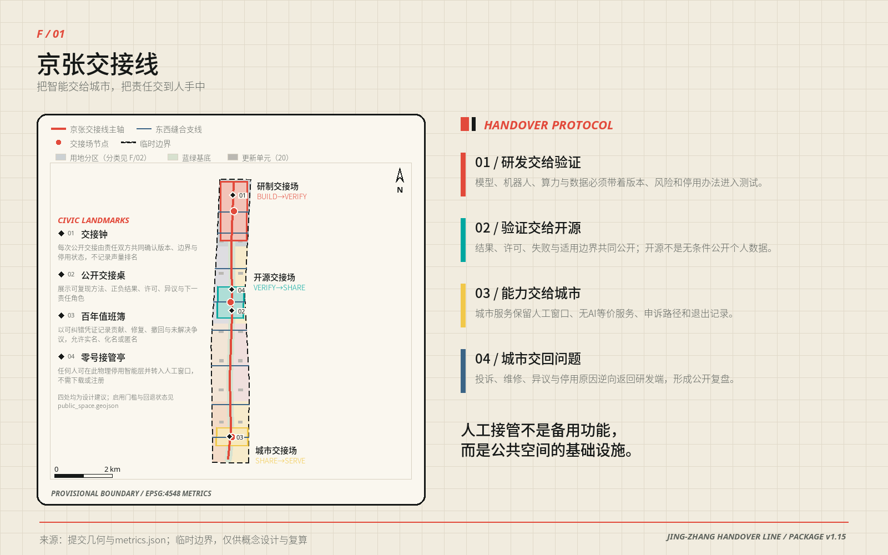
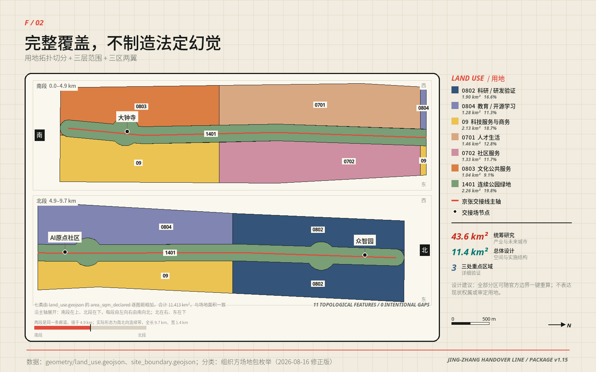
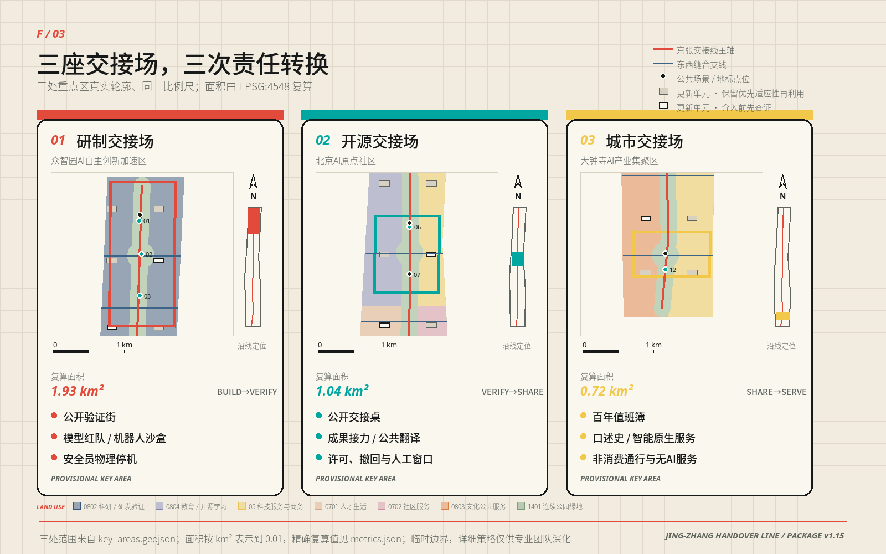
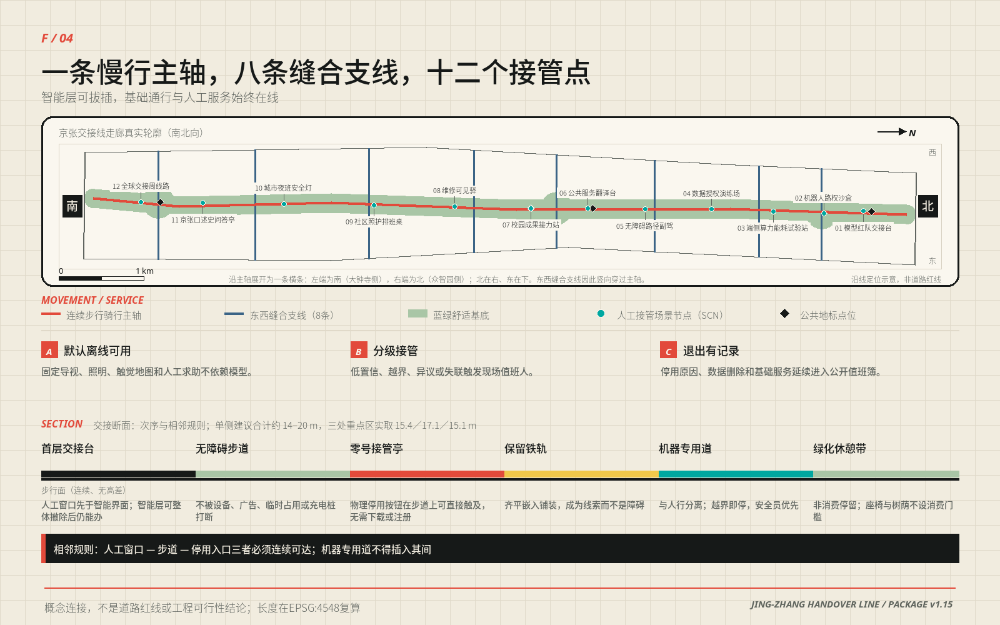
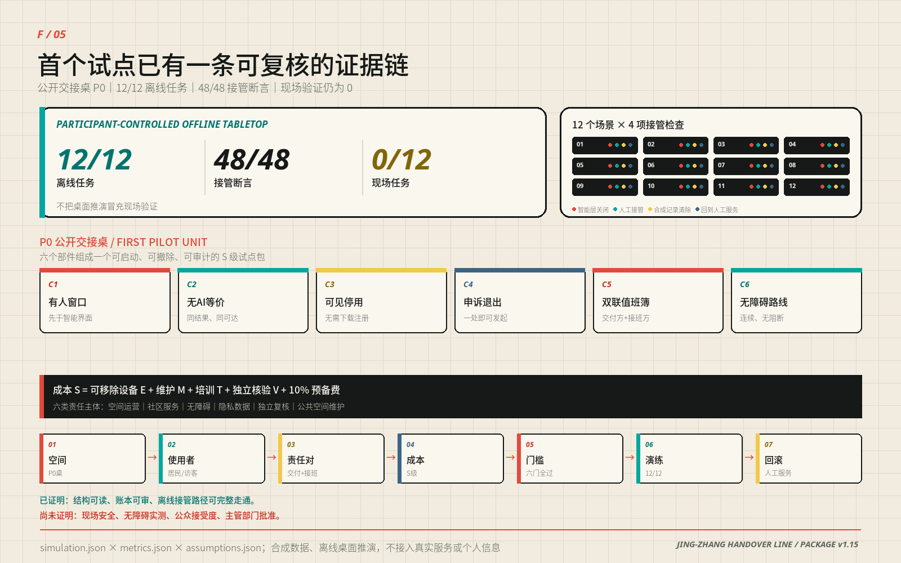

京张交接线 / JING-ZHANG HANDOVER LINE：把智能交给城市，把责任交到人手中
把铁路交接班转化为AI城市治理协议：一条连续交接线串联研发、验证、开源与公共服务，十二个可逆场景都设置人工接管、无AI等价服务与退出条件。
京张交接线 / JING-ZHANG HANDOVER LINE
> 把智能交给城市，把责任交到人手中。
本方案把京张铁路最朴素也最重要的制度——交接班——转译为AI时代的城市空间协议。研究把模型交给验证，验证把能力交给开源社区，社区把服务交给市民；当系统不确定、失联、越界或被人质疑时，控制权必须清楚地交回人手中。因此“一条交接线、三座交接场、两翼支撑、十二个可逆场景”既是空间结构，也是公共责任结构。所有精准几何均为可复算的概念建议，所有法定控制均等待专业团队和政府部门确认。
设计依据与资料清单
方案以征集公告、面向智能体任务书和仓库正式资料包为任务依据。公告定义43.6平方公里统筹研究范围、约11.4平方公里总体设计范围与三处重点区域；资料包提供枚举、模式、临时几何和校验工具，但明确缺少官方红线、控规、道路、权属、市政、消防、文保与完整现状建筑资料。本包据此把事实、推断和设计分成三栏：公开事实进入来源登记；临时边界保留 official_boundary=false；新增空间只标记 design_proposal。其证据入口为 [source:OFFICIAL-ANNOUNCEMENT]、[source:AGENT-TASKBOOK]、[source:SITE-PACKAGE]、[source:SOURCE-REGISTRY] 与 [source:PROCESSED-FACT-PACK]。
本次计算使用 [source:BOUNDARY-SOURCE] 和 [source:KEY-AREA-SOURCE]，对应 [data:geometry/site_boundary.geojson#SITE-001] 与 [data:geometry/key_areas.geojson#PROV-KEY-001]。它们只支持方案生成、比较、自检和展示，不是官方红线或精确面积依据；官方多边形发布后，九类几何、五张图、两套PDF与全部指标必须重新生成。控规、建筑设计与用地表达分别响应 [standard:MOHURD-CONTROL-DETAILED-PLANNING]、[standard:MOHURD-ARCH-DESIGN-DEPTH-2016] 与 [standard:MNR-LAND-USE-CLASSIFICATION-GUIDE]；其中建筑设计深度文件尚缺正式内容，只作为深化提醒而不充当审定标准。总体工作同时响应 [standard:PROJECT-OFFICIAL-ANNOUNCEMENT]、[standard:PROJECT-AGENT-OPEN-CALL-TASKBOOK] 和 [standard:MOHURD-URBAN-DESIGN-MEASURES]。
生成方法是确定性的：EPSG:4326负责交换，EPSG:4548负责面积和长度；用地由场地边界拓扑切分，绿地、公共空间、建筑类型单元和线路均由同一空间模型导出，指标不从图面人工抄录。资料缺口诊断见 [depth:existing_conditions_diagnosis]，缺口登记见 assumptions.json，专业覆盖见 standard_matrix.json 与 design_depth_matrix.json。图形、版式、符号和文字为本方案原创程序化生成；六个国际案例只转述公开网页机制，不复用照片、地图、商标或他人图表。

三层范围工作框架
三层范围不是三份彼此独立的图纸，而是一条从战略判断到空间验证的证据链。统筹研究范围回答“海淀如何以公开协作和可信验证形成世界级AI生态”；总体设计范围回答“产业、生活、生态和新基础设施如何落入连续城市结构”；三处重点区域回答“一个具体场所怎样同时容纳功能、建筑、慢行、公共空间、场景治理与实施触发器”。这种逐层收敛的工作法由 [depth:three_level_scope_framework] 约束，临时总体范围计算面积为11,412,825.386平方米 [metric:site_area_sqm]，三处临时重点区域数量为3 [metric:key_area_count]。
统筹层采用“三区两翼”的协同回路：北部众智园负责 Build→Verify，中央AI原点社区负责 Verify→Share，南部大钟寺负责 Share→Serve；中关村科技服务翼提供法务、知识产权、人才、资金与标准服务，小月河场景赋能翼提供公共服务、环境与生活验证。能力并非单向下放：市民投诉、维护记录和场景退出原因沿交接线逆向返回研发端，构成“研发—验证—开源—服务—反馈”闭环。
总体设计层形成“一条交接线、三座交接场、八条东西缝合支线、二十个更新类型单元”。交接线长度约9,499.778米 [metric:handover_spine_length_m]，八条缝合支线 [metric:cross_link_count] 只表达步行、骑行与公交换乘的概念性连接意图，不表达道路红线、桥隧或工程可行性。重点区层分别细化验证、开源和城市服务的交接协议；临时边界替换后，空间网络会按同一算法裁切和复算，而不是人为拉伸旧图。

统筹研究范围产业与未来城市研究
公告与面向智能体任务书已经给定一带的三大定位、五大功能和“三区两翼”格局。本方案不另造一套话语，而是把官方表述逐项翻译成可指认的空间载体、可运行的机制和可复核的证据入口；“京张交接线”是这套翻译的空间总名，不是对官方定位的替换。
| 官方定位与功能 | 本方案的空间与机制载体 | 证据入口 |
|---|---|---|
| 定位·百年京张文化带 | 交接线沿线“百年值班簿—口述史问答亭—清华园火车站方向文化锚点”的连续记录序列 | [data:geometry/public_space.geojson#SCN-11]、A-HERITAGE-001 |
| 定位·都市AI生活体验带 | 十二个可逆场景与连续公共交接面组成的日常体验序列 | [metric:scenario_node_count]、[metric:public_space_ratio] |
| 定位·AI融合创新带 | 八个共享栈在三区之间的接口，以及“研发—验证—开源—服务—反馈”闭环 | [depth:overall_spatial_structure] |
| 功能·AI全栈自主创新体系 | 众智园研制交接场：模型红队交接台、机器人路权沙盒、端侧能耗试验站 | [data:geometry/key_areas.geojson#PROV-KEY-001] |
| 功能·世界级AI创新生态 | AI原点社区开源交接场，叠加中关村科技服务翼的八栈供给 | [data:geometry/key_areas.geojson#PROV-KEY-002] |
| 功能·AI+场景赋能新范式 | 四个产业验证沙盒与八个城市服务场景的“上线—评估—退出”规则 | [metric:industry_validation_scenario_count] |
| 功能·智能化AI活力城市 | 小月河场景赋能翼承担的公共服务、环境与生活验证 | [depth:blue_green_public_space] |
| 功能·AI治理全球话语权 | 公开值班簿、四张单与全球交接周构成的可复核治理记录 | [depth:risk_missing_data] |
在此之下，本方案的三条工作主线是全球可信AI的公开验证走廊、AI原生城市生活的人工接管示范带、百年工程文化与开源文化的共同记忆场；五个动作是研发、验证、开源、服务与复盘。品牌Logo由两条平行铁轨、一个交接棒和一枚信号括号组成：煤黑代表可审计责任，信号红代表必须停下并由人判断的阈值，电气青代表开放接口，米白代表可阅读的公共记录。三个节点命名统一为“研制交接场、开源交接场、城市交接场”，小型设施统一称“交接台、接管亭、值班簿”，避免用彼此无关的科技口号堆砌品牌。
区域创新协同按“带内—城内—市域—区域”四层写明，而不是只谈一带内部。带内由“三区两翼”组织研发、验证与服务的协同回路；城内联动公告提出的“两区一带”产业发展格局，把中关村科学城的技术供给与本带的验证、开源和场景需求对接；市域层面与未来科学城、怀柔科学城和北京经济技术开发区形成“原始创新—工程验证—规模落地”的分工，本带承担公开验证与治理规则的输出端，而不重复建设中试与制造环节；区域层面沿京张方向为张家口等京津冀节点预留算力、能源与场景协作接口。公告提出的海淀“1+X+1”产业体系由产业主管部门定义，本方案只在其“AI+”融合方向上提供空间接口和验证工具，不代替体系本身。所有协同关系都以“接口、规则和可复核记录”表达，不涉及行政区划调整、指标划转、投资安排或任何一方已作出的承诺，具体可行性须由产业、能源、算力和统计主管部门核实。
全球案例研究只提取机制，不复制形式或绩效结论，并同时写明不可直接移植的制度条件；比较范围受 A-CASES-001 限制，全部转译受 [depth:overall_spatial_structure] 约束。
| 案例 | 机制要点 | 本方案的转译 | 不可直接移植的条件 |
|---|---|---|---|
| 新加坡 JTC LaunchPad @ one-north [source:CASE-ONE-NORTH] | 测试床、孵化与首层展示同址 | 研制交接场设公开验证街与可参观首层 | 统一开发主体与园区租约制度 |
| 赫尔辛基 Smart Kalasatama [source:CASE-KALASATAMA] | 敏捷试点、居民共创、可评价可退出 | 十二个场景全部设退出条件与无AI兜底 | 城市规模、福利体系与居民参与传统 |
| 巴黎 STATION F [source:CASE-STATION-F] | 多项目共享服务平台形成社群密度 | 八个共享栈取代虚构企业名单 | 单一建筑内的私营统一运营主体 |
| 巴塞罗那 22@ [source:CASE-22BARCELONA] | 产业转型与住房、公共空间、治理同步 | 更新分三层推进，先运营后改造 | 用地转换与开发权移转的法定工具 |
| 剑桥 Kendall Square K2C2 [source:CASE-KENDALL] | 用地、交通、城市设计与行动计划同一研究 | 九类几何、指标与深度矩阵同源生成 | 分区法与社区审议程序 |
| 伦敦 Knowledge Quarter [source:CASE-KNOWLEDGE-QUARTER] | 联盟式知识交换与公共可达 | 公开交接台与全球交接周作为共同地面 | 机构自愿联盟与既有公共文化设施密度 |
产业生态采用“八个共享栈”而非虚构企业名单：土地栈负责可逆空间供给；空间栈提供开放研发院、验证工坊和社区协作屋；产业栈组织模型、芯片、机器人与垂直应用之间的接口；资金栈只提供透明申请与服务导航，不承诺补贴；人才栈连接高校、开发者、维护者与居民；算力栈优先端侧计量和按需接入；数据栈以授权、最小化、撤回和审计为前提；场景栈发布问题、测试规则、结果与退出记录。八栈分别在三区交接，形成未来城市中“可见的后台”：市民不仅看见AI输出，也看见谁负责、怎样停用、哪里申诉。
总体设计范围城市更新与控规深度城市设计
总体设计范围北至北五环路，东至学院路与西土城路方向，南至西直门外大街，西至大钟寺东路与荷清路方向；京张遗址公园是贯穿其间唯一连续的公共载体。本方案把它当作活力带的骨架而不是背景绿地：交接线与遗址公园南北贯通、东西连通的步行骑行体系重合，八条东西支线缝合高校、园区、社区与轨道方向，三座交接场把这条线从景观通廊升级为承担研发、验证与城市服务交接的公共机制。遗址公园北端、南端以及上跨北五环的区段是三处必须专门处理慢行断点的位置，本方案在此只给出连接意图和界面原则，不给出桥隧或工程可行性结论。
总体结构因此不是一张分区图，而是一套“骨架—缝合—交接”的空间体系：交接线是责任传递的骨架，支线是可增删的缝合网络，交接场是机制发生改变的节点。用地分区由临时边界完整拓扑切分为11个要素 [metric:land_use_zone_count]，见 [data:geometry/land_use.geojson#LU-001]：北段以科研用地0802承载自主研发与验证，中段以教育0804、商业服务05、住宅0701和社区服务0702形成开源与人才生活混合，南段以文化0803和商业服务05承载城市服务、国际交往与智能原生消费，连续绿地采用1401。这种混合不是功能拼贴，而是让每一段都同时具备“工作—生活—社交—学习”四类日常场景，从而在职住商服务之间形成可步行的平衡关系；校区、园区、街区之间的融合优先发生在交接场与支线交汇处，那里也是统筹实施模式最容易成立的位置。该结构是 [depth:land_use_layout] 的城市设计建议，不替代现状权属或法定用地。
更新策略坚持“先盘点、再试用、后固化”：第一层为无需建筑改造的运营交接，例如公开值班簿和测试规则；第二层为首层开放、屋顶低扰动和可撤除构件；第三层才是经结构、权属、消防和文保核查后的适应性更新。二十个建筑类型试验单元见 [data:geometry/buildings.geojson#BLDG-001] 和 [metric:renewal_cell_count]，联合基底221,014.099平方米 [metric:building_footprint_area_sqm]，只用于比较空间供给类型，绝不表示现状建筑总量、拆除对象或获批新建规模。
法定开发强度、建筑高度、密度、退界和停车控制均保持未知：[metric:floor_area_ratio] 与 [metric:maximum_building_height_m] 不赋伪精确数值。对应 [depth:development_intensity_controls]，后续应把官方控规、城市设计导则、文保条件和交通市政容量导入同一模型后再形成强度分区。当前方案只提出形态原则：沿公共空间形成连续可进入首层，研发院落保留可分合的大跨空间，社区界面控制噪声与夜间扰动，重要历史线索周边优先低矮、可逆、留白。
重点区域详细设计
三处重点区的几何仍为临时范围，详见 [data:geometry/key_areas.geojson#PROV-KEY-001]、[data:geometry/key_areas.geojson#PROV-KEY-002] 与 [data:geometry/key_areas.geojson#PROV-KEY-003]；以下均是供专业团队深化的方向性方案，由 [depth:three_key_area_detailed_design] 检查。
众智园AI自主创新加速区：研制交接场 / Build→Verify
北段以“模型交付前必须留下可读记录”为核心。空间形成一条公开验证街、两组共享测试院和临清河方向的低扰动绿色界面。建筑更新优先利用大开间与首层，布置模型红队交接台、机器人路权沙盒、端侧能耗试验站和标准协作室；物流与受控测试从园区内部进入，公众参观从交接线进入，二者以透明但不可穿越的安全界面分开。每次试验展示适用范围、数据来源、人工负责人、停机按钮和退出原因；缺少企业授权、道路条件和安全论证时不进行实地部署。
本片区承担标准制定与安全治理方向的空间需求，因此建筑、绿地与水系按同一套界面规则一体化设计：清河方向的滨水段作为“可解释的绿色空间”，把水质、径流、树荫和设备能耗以固定标识和纸本同时公示，让绿色空间本身成为AI服务的验证场而非装饰背景；清河的水利与工程文化以沿岸记录牌和值班簿方式展示，不改动河道形态。对外交通结合五环路沿线的区域一体化方向提出改善需求与优先级，具体断面、匝道、跨越方式与工程可行性须由交通与市政专业依据官方资料判定，本方案不作结论 [depth:traffic_rail_slow_parking]。
北京AI原点社区：开源交接场 / Verify→Share
中央段以近校成果转化和人才日常生活为核心。开放发布厅、校园成果接力站、公共服务翻译台、无障碍路径副驾与社区协作屋围绕步行可达的“公开交接桌”布置；首层连续但夜间分级，研发活动与居民安静界面之间设置绿化、共享客厅和可关闭门廊。更新动作遵循保留优先：先用空置时段、可移动家具和短期使用权验证需求，再决定空间改造。开源不等于无条件公开个人或科研数据，代码、模型、数据集和空间使用分别设置许可、撤回和安全审查。
成果从实验室走向城市需要两段可步行的距离：孵化段紧邻校门与院所出入口，转化段沿交接线布置并向社区开放。五道口与清华东路西口方向的轨道站点是这两段的起点，站点一体化的重点不是增加商业面积，而是把“到站—辨识—求助—进入公共空间”的连续界面补齐，并优先修复校区与园区之间的慢行断点。低扰动有机更新在此意味着：先用时段共享和临时使用权验证需求，再讨论产权与改造；轨道站一体化的换乘量、出入口方案与工程条件须由交通专业依据官方数据核定。
大钟寺AI产业聚集区：城市交接场 / Share→Serve
南段把AI能力交给日常城市服务。大钟寺站方向、商业街区和京张遗址公园南端通过“城市交接厅—百年值班簿—口述史问答亭”形成可步行序列；智能原生消费不依赖人脸识别或强制App，而采用可解释的产品比较、终端体验、人工顾问和匿名反馈，智能体、智能终端与内容消费类业态的共同前提是可比较、可拒绝、可退出。办公与商务空间提供国际路演、合规咨询和城市问题发布，公共空间保留市民通行、休息和非消费使用；数据要素与数字资产的流通只在授权、可撤回和可审计的前提下讨论，本方案不设计交易规则本身。
大钟寺站所在路口的四个象限目前由车行主导，本方案把它作为整个南段能否成立的关键节点：四象限之间需要一套连续、可视、无高差障碍的步行连通关系，并在每个象限设置到达界面与人工求助点；非机动车停放按“靠近出入口、不侵占步行连续面、可回收可迁移”的原则组织，避免以栏杆和围挡换取秩序。轨道接驳方案、四象限具体连通方式、既有建筑处置与地标高度均需正式交通、权属、消防和文保资料后由专业团队深化，本方案不预设结论。

AI 创新生态、人才画像与 AI+ 场景
场景设计不把AI当成自动化装饰，而把它视为一项随时需要交接的公共服务。七类用户画像各自对应明确的空间载体、场景与评价口径；任何画像都不用于商业追踪，也不以画像分配资源或排序个人。
| 用户画像 | 核心需求 | 空间载体 | 关联场景 | 评价口径（聚合、不识别个人） |
|---|---|---|---|---|
| 开发者 | 可复现的测试与贡献记录 | 公开验证街、公开交接台 | SCN-01、SCN-07 | 贡献条目数、复现成功率 |
| 初创团队 | 低成本试验、合规与算力入口 | 共享测试院、共享服务栈 | SCN-02、SCN-03 | 试验排队时长、入口可用率 |
| 产业维护者 | 故障、版本与责任可见 | 维修可见驿、百年值班簿 | SCN-08 | 工单闭环率、平均接管时长 |
| 高校师生 | 成果转化与授权边界清晰 | 校园成果接力站、开放发布厅 | SCN-07 | 许可标注完整度、撤回响应时长 |
| 居民与老人 | 不使用智能终端也能获得同等服务 | 人工窗口、社区协作屋 | SCN-06、SCN-09 | 无AI等价服务覆盖率 |
| 残障与临时行动不便者 | 可验证的连续无障碍路径 | 无障碍路径副驾、触觉地图 | SCN-05 | 路径复核通过率、断点修复时长 |
| 国际访客 | 多语解释与人工求助 | 公共服务翻译台、零号接管亭 | SCN-06、SCN-12 | 人工求助响应时长、多语纸本覆盖率 |
十二个节点已经写入 [data:geometry/public_space.geojson#SCN-01]，数量为12 [metric:scenario_node_count]；其中4个产业验证场景 [metric:industry_validation_scenario_count] 满足先沙盒、后评估、再决定是否扩大。下表每一行都包含无AI等价服务，统一本地原则是：失联、越权、风险阈值触发或任何人提出异议时，立即停用智能功能，保留基础服务并进入人工值班簿。
| ID | 场景与位置 | 服务对象与最小数据 | 人工交接、无AI兜底与退出条件 |
|---|---|---|---|
| SCN-01 | 模型红队交接台；众智园 | 模型团队；仅测试样本、版本与风险条目 | 人工评审签字，纸面风险登记；未闭环重大风险即退出 |
| SCN-02 | 机器人路权沙盒；众智园 | 机器人团队与安全员；封闭段轨迹 | 安全员物理停机、人工封闭测试；越界或失联即退出 |
| SCN-03 | 端侧算力能耗试验站；众智园 | 运维者；独立电表与任务负载 | 人工停机、离线计量；温升或能耗阈值触发即退出 |
| SCN-04 | 数据授权演练场；北中交界 | 数据产品团队与公众；自愿授权记录 | 线下授权单、即时删除窗口；无法撤回即退出 |
| SCN-05 | 无障碍路径副驾；原点社区 | 行动不便者；用户主动输入的路线障碍 | 触觉地图、人工问路；路线未经复核或中断即退出 |
| SCN-06 | 公共服务翻译台；原点社区 | 居民与国际访客；现场输入文本 | 人工窗口、多语纸本；置信度不足或涉及权益决定即交人 |
| SCN-07 | 校园成果接力站；原点社区 | 师生、开发者；作者授权的成果元数据 | 人工策展、开放目录；许可不清或安全未审即撤下 |
| SCN-08 | 维修可见驿；中段 | 设施维护者与居民；匿名报修、工单状态 | 电话和纸面报修、人工派单；自动派单冲突即交班 |
| SCN-09 | 社区照护排班桌；生活段 | 老人、照护者、社区人员；最小化排班信息 | 工作人员电话排班；拒绝算法分配不影响服务 |
| SCN-10 | 城市夜班安全灯；南中段 | 夜间行人和维护者；设备状态，不采人脸 | 固定照明、人工巡查；感知异常即退回常亮模式 |
| SCN-11 | 京张口述史问答亭；大钟寺 | 居民、访客、研究者；清权馆藏索引 | 人工讲解与纸本目录；出处不确定即只显示索引 |
| SCN-12 | 全球交接周线路；全带 | 开发者、公众、国际访客；预约与匿名客流 | 固定导视、志愿者服务；拥挤或安全风险即暂停互动 |
治理上实行“四张单”：数据清单说明用什么、不用什么；责任清单写明场景所有者和现场值班人；接管清单规定停止阈值和最迟响应；退出清单公开为什么关闭、数据怎样删除、服务如何继续。场景上线前需经过隐私、无障碍、安全和公共利益评估，日常只发布聚合运行状态。由此，AI价值从“使用了多少模型”转向“城市是否更容易理解、质疑和接管技术”。
用地、建筑规模与拆改留方案
用地方案以现行公开分类代码表达，公园绿地为1401、科研为0802、教育为0804、文化为0803、社区服务为0702、住宅为0701、商业服务为05。所有分区共同覆盖临时总体范围且不重叠；绿地既是独立用地分区，也是交接线的气候与公共舒适底板。该结果是算法生成的城市设计结构，不能倒推现状地类、权属或规划许可。设计深度由 [depth:land_use_layout] 与 [standard:MNR-LAND-USE-CLASSIFICATION-GUIDE] 控制。
建筑采用“保留R—修缮A—可逆插入I—待核D”的四步判定，而不是直接画拆除图。当前二十个类型单元只示范开放研发院、验证工坊、共享服务栈和社区协作屋四种空间原型：R要求继续使用并建立现状档案；A允许消防、节能、无障碍和首层开放修缮；I只用可拆装构件验证需求；D并不代表拆除，而是等待逐栋测绘、结构鉴定、权属协商和文保审查。该方法响应 [depth:retain_renovate_demolish]。
形态控制采取性能语言而非虚构数值：交接线界面保证首层可见、可进、可绕行；大体量建筑通过院落与穿行门廊降低尺度；屋顶优先设备整合、雨水管理和可维护性；住宅和历史敏感界面控制噪声、眩光与夜间活动；关键视线端点留给公共地标，不以企业Logo垄断天际线。具体高度、建筑规模、日照、消防间距和退界须在官方条件下由专业团队核定，见 [depth:height_massing_character] 与 A-BUILDING-001。
交通、轨道、市政与公共服务设施
交通结构由一条连续步行骑行主轴与八条东西缝合支线组成，概念线路总长18,855.117米 [metric:conceptual_movement_length_m]，见 [data:geometry/roads.geojson#ROAD-001]。主轴服务全带连续体验，支线只标识需要由专业交通研究解决的连接方向；每个交接场设置“到达—减速—辨识—人工求助—继续”的五步界面。轨道站点、北五环跨越、道路断面、停车与非机动车容量均缺正式数据，因此不声称新建桥隧或调整道路红线。后续交通模型需验证十五分钟慢行覆盖、换乘冲突、消防与物流时段，并响应 [depth:traffic_rail_slow_parking]。
市政采用“普通服务先行、智能层可拔插”。每个节点先具备照明、供电、排水、通讯、消防、无障碍和人工服务，再增加边缘计算、传感和模型接口；智能层断电或停用时，基础功能继续。端侧算力采用独立计量、热管理和任务排队，雨水花园优先重力排水与可维护植物，数字标识保留固定文字和触觉版本。分布式能源与端侧算力按“同址计量、同址公示、同址可停”与传统供电、供热和通信设施衔接：屋顶与构筑物预留分布式发电和储能位置，余热优先就近利用，能耗与温升数据在SCN-03同步公示；是否接入、以何种规模接入，须由能源与市政主管部门依据容量核定。由于地下管线与容量未知，所有设施只表达接口和需求，不承诺接入规模、能源绩效或资金安排，对应 [depth:municipal_new_infrastructure] 与 [data:geometry/constraints.geojson#CONSTRAINTS-DATA-GAP]。
沿交接线的配套设施按“慢行连续优先、静态交通不占公共面”的原则组织：停车与非机动车停放靠近出入口而不切断步行连续界面，体育与创新交往设施优先利用桥下、边角与低效空间形成可预约的公共时段，展示与科技测试功能沿公开验证街集中而不散布到居住界面。设施规模、配建标准与停车指标须依据官方控规和交通评估确定，本方案只给出布局原则与优先级。
公共服务设施采取共享服务栈：法律与知识产权、标准与安全、人才与居住、融资导航、国际交流、公共翻译、维修与投诉均可预约，但必须保留现场人工窗口或电话。服务栈不绑定指定供应商，不以人脸或设备ID作为进入条件，服务数据与商业数据分离。它把科技服务翼的专业能力交给三个片区，也把社区问题反向交给研发端。

蓝绿空间、公共空间与城市风貌
蓝绿系统以约2,264,695.802平方米概念绿地 [metric:green_space_area_sqm] 形成19.8434%的结构性绿地比例 [metric:green_ratio]，公共交接面约1,039,257.211平方米 [metric:public_space_area_sqm]，占9.1060% [metric:public_space_ratio]。两者分别见 [data:geometry/green_space.geojson#GREEN-01] 与 [data:geometry/public_space.geojson#PUBLIC-01]。这些是基于临时范围的设计面积，并非现状绿地率或审定控规指标；它们用于验证连续树荫、雨洪、休息、慢行和公共测试是否有足够空间承载。空间策略响应 [depth:blue_green_public_space]。
四个“朝圣地标”不是孤立雕塑，而是可使用、可维护、可撤回的公共制度：北部“交接钟”显示模型版本、适用范围和下一次人工复核时间；中央“公开交接台”是一张可举行代码评审、市民质询与成果发布的长桌；南部“百年值班簿”把铁路维护记录、开发者贡献和城市服务复盘并置；沿线“零号接管亭”提供实体停用按钮、人工求助、纸本地图和无障碍服务。荣誉系统不按资本或流量排名，而记录修复漏洞、维护公共代码、提出有效异议和改善无障碍的贡献。
城市风貌采用“铁路运维账簿”语汇：煤黑结构、信号红阈值、电气青接口、米白记录面；导视以站号、班次、版本、责任人和更新时间组织。文化叙事不是把蒸汽机符号贴到科技园，而是连接三种劳动伦理：京张工程建设的自主与维护，中关村创新文化的试验与分享，AI时代对数据、模型和公共后果负责的日常值守。国际传播语为 “Intelligence moves. Responsibility stays visible.”，中文对应“智能流动，责任可见”。
文化与艺术资源以“连接而不占用”的方式进入这套语汇：清华园火车站方向作为交接线北段的历史起点，其展示以站台尺度的记录装置、纸本档案和口述史接口衔接，不主张对文物本体作任何改动，具体保护措施与开放方式以文保主管部门意见为准 [depth:risk_missing_data]；北京电影学院所在的西土城路方向作为艺术资源接口，承担影像记录、公共放映与叙事共创的合作可能，属于协作意向而非已确定安排。清河与小月河两条水系分别锚固北段与中段的公共生活：滨水段优先树荫、可坐可停与连续慢行，水岸设施可撤除、可维护。对具备更新潜力的区域，风貌管控采用“可校验的引导”而非固定数值：建筑高度与强度待官方控规确定；体量以院落、穿行门廊和界面分段控制；屋顶形态按“设备整合优先、第五立面可读、避免大面积反光与眩光”引导，并为分布式能源与雨水设施预留位置。上述引导属城市设计建议，最终以法定审批为准 [depth:height_massing_character]。
更新项目清单、实施政策与分期计划
更新项目不以一次性大拆大建启动，而以可逆、公开、能形成反馈的最小单元启动。十二项概念项目为：01交接线树荫与基础导视；02北部模型红队交接台；03机器人路权封闭沙盒；04端侧能耗试验站；05中央公开交接台；06校园成果接力站；07无障碍路径副驾；08维修可见驿；09南部城市交接厅；10百年值班簿；11口述史问答亭；12全带开放交接周。每项都需明确业主或运营方、公共责任人、许可、预算、维护、退出和数据删除，未完成前不得把概念项目写成已落地安排。
三期空间见 [data:geometry/phasing.geojson#PHASE-001]，分期数量为3 [metric:phase_count]。近期“交回基线”先完成官方资料补齐、现状盘点、公共导视和三个低风险人工主导试点；中期“开源交接场”在评估通过后推进首层开放、成果接力和社区服务；远期“全带运营”才讨论跨片区网络与更复杂产业验证。每一期的启动门槛都是官方边界、权属、控规和专项条件核实，以及公共利益、隐私、安全和无障碍评估，而不是日历自动触发。项目清单与分期分别响应 [depth:renewal_project_list] 和 [depth:phasing_implementation]。
年度运营形成四季班表：春季“开源交班”发布城市问题与公共代码；夏季“夜班维护者之夜”展示维修和可靠性；秋季“全球交接周”组织模型、机器人与公共服务的可解释演练；冬季“年度复盘班”公布停用、投诉、修复和下一年退出清单。开发者贡献进入公开值班簿，居民通过问题发布、场景陪审和无AI服务测试持续参与。国际招引的转化路径是“参观—问题配对—受控试验—公开评估—本地合作”，不承诺招商金额、补贴或政府采购。
指标体系、面积复算与合规矩阵
指标的目的不是制造确定感，而是让设计可比较、可重算、可被质疑。面积和长度在EPSG:4548中计算，计数直接来自GeoJSON要素；指标置信度继承边界和现状资料质量。用地联合覆盖、空间位于场地内、来源可追溯和人工接管是当前可校验内容；容积率、高度、总建筑规模、人口、产值、投资和碳绩效因缺正式资料不得赋值。复算方法响应 [depth:metrics_recalculation]。
| 指标 | 当前值与解释 | 证据 |
|---|---|---|
| 临时场地面积 | 11,412,825.386㎡；官方边界替换后重算 | [metric:site_area_sqm] |
| 概念绿地 | 2,264,695.802㎡；结构性绿地而非现状净增 | [metric:green_space_area_sqm] |
| 概念绿地比例 | 0.198434；支撑树荫、雨洪和连续慢行 | [metric:green_ratio] |
| 公共交接面 | 1,039,257.211㎡；包含连续公共廊道与三节点 | [metric:public_space_area_sqm] |
| 公共空间比例 | 0.091060；保证非消费使用与人工服务 | [metric:public_space_ratio] |
| 建筑类型单元基底 | 221,014.099㎡；仅二十个概念试验单元 | [metric:building_footprint_area_sqm] |
| 交接线长度 | 9,499.778m；连续慢行与责任展示主轴 | [metric:handover_spine_length_m] |
| 概念线路总长 | 18,855.117m；含八条东西缝合支线 | [metric:conceptual_movement_length_m] |
| 东西支线 | 8条；待交通和工程核验 | [metric:cross_link_count] |
| AI场景节点 | 12个；均有人工接管与无AI兜底 | [metric:scenario_node_count] |
| 产业验证场景 | 4个；只允许受控沙盒 | [metric:industry_validation_scenario_count] |
| 重点区域 | 3处；均为临时边界 | [metric:key_area_count] |
| 更新类型单元 | 20个；不等于现状建筑清单 | [metric:renewal_cell_count] |
| 用地要素 | 11个；拓扑联合覆盖场地 | [metric:land_use_zone_count] |
| 概念分期 | 3期；由条件触发而非自动实施 | [metric:phase_count] |
公告要求研提“AI创新指数、人才密度、产值规模”等规划指标体系。本方案给出口径而不给出数值：在官方统计、权属和企业数据发布之前，任何数值都会变成不可复核的伪精度，反而削弱指标体系的用途。下表定义计算口径、数据前置条件和赋值触发，官方数据到位后由同一模型一次性赋值并进入 metrics.json，与几何类指标共用同一套复算规则。
| 规划指标 | 口径定义 | 数据前置条件 | 当前状态 |
|---|---|---|---|
| AI创新指数 | 由可公开验证的子项加权：公共代码贡献数、可复现验证记录数、场景退出与修复记录数、开放接口数 | 需一带范围内的公开贡献台账与场景运行记录 | [metric:ai_innovation_index] 未赋值 |
| 人才密度 | 单位就业用地上的AI相关从业与在学人口 | 需官方就业、学籍统计与用地权属数据 | [metric:talent_density] 未赋值 |
| 产值规模 | 统计口径内AI及“AI+”融合产业年度产值 | 需统计部门口径与企业名录 | [metric:output_scale] 未赋值 |
| 更新后区域建筑总规模 | 更新实施后范围内规划建筑面积总量 | 需现状建筑普查、控规与许可数据 | [metric:renewed_building_scale_sqm] 未赋值 |
| AI企业聚集目标 | 范围内AI企业与研发机构的数量目标 | 需产业主管部门目标与企业名录 | [metric:ai_enterprise_target_count] 未赋值 |
这五项与容积率、建筑高度同属“有口径、无数值”一类：它们不是遗漏，而是把赋值权交还给掌握官方数据的主体，同时保证一旦数据到位就能被同一套方法复算和质疑。
compliance_matrix.json逐条覆盖公告1.3、1.4、1.5和agent.1—agent.6；standard_matrix.json覆盖六项标准；design_depth_matrix.json覆盖十五项专业深度。确定性、空间、视觉和专业检查共同验证机器可读包，人工评审仍拥有最终判断。建筑强度与高度保持unknown，是合规结果而非遗漏。整个矩阵由 [standard:PROJECT-OFFICIAL-ANNOUNCEMENT] 和 [standard:PROJECT-AGENT-OPEN-CALL-TASKBOOK] 统领。

风险、版权与合规说明
最大风险不是技术能力不足，而是把临时数据和概念方案误读为官方决定。A-BOUNDARY-001要求官方边界发布后重算；A-CONTROLS-001禁止自造强度和高度；A-TRANSPORT-001禁止把连接意图写成道路或桥隧结论；A-HERITAGE-001要求文保前置；A-MUNICIPAL-001禁止承诺容量；A-BUILDING-001要求逐栋核查；A-OPERATIONS-001要求场景小规模、人工复核和可退出。风险与缺资料深度由 [depth:risk_missing_data] 控制，空的 [data:geometry/constraints.geojson#CONSTRAINTS-DATA-GAP] 正是“没有公开约束几何就不伪造”的证据，而不是声称不存在约束。
隐私边界采用数据最小化、自愿参与、目的限定、可撤回、限时保存和人工申诉；不得使用秘密地图、非公开表格、未经授权个人数据、强制人脸识别或无法人工复核的权益决定。公平性以“无智能手机、不会中文、残障、老人和选择不用AI的人仍能获得等价基础服务”为底线。技术失败时先保证照明、通行、求助和公共服务，再处理模型恢复。
版权声明见 report/copyright_statement.md。本包图形、Logo方向、地图符号、排版、文字、几何与PDF均为本次原创或基于仓库清权数据程序化生成；外部案例只作文字转述，未复制图片、地图、字体、商标或受保护版式。方案是开放共创的概念建议，不替代规划、建筑、交通、景观、市政、消防、文保、法律、隐私与工程专业服务，也不代表政府批准、投资、采购、招商或实施承诺。
参考资料
公开资料索引内的基础依据为 brief/public-brief.md 与 brief/README.md，前者给出本次征集的公开任务说明，后者给出资料公开性与使用边界。在此之上，仓库内依据还包括 brief/site-package/design_brief.json、agent_taskbook.json、allowed_design_space.json、sources.json、geometry/provisional_boundaries.geojson、ranges/planning_limits.json、standards/standards.json、data/source_registry.json、data/processed/agent_fact_pack.md 以及全部schemas与enums。正式来源和用途边界已逐项登记在 sources.json；假设与复算触发器登记在 assumptions.json；版权和生成方式登记在 report/copyright_statement.md。
外部机制对照包括JTC LaunchPad、Forum Virium Helsinki Smart Kalasatama、STATION F、Ajuntament de Barcelona 22@、City of Cambridge Kendall Square K2C2、Knowledge Quarter London六个机构官网或官方报告，检索日期均为2026-08-08。所有案例只作概念机制参考，未将绩效、土地制度、资金政策或治理安排直接移植到海淀。正文的机器可读证据入口覆盖九类几何、全部已知指标、六项标准与十五项专业深度；资料入口以 [source:SITE-PACKAGE] 为索引，人类读者可从正文回到JSON、GeoJSON、HTML与PDF复核每一项关键判断。